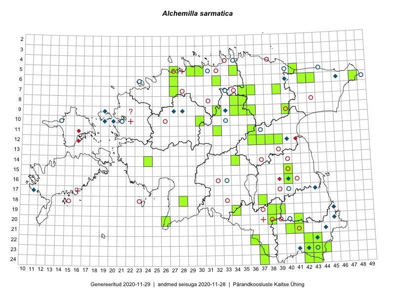

Alchemilla sarmatica — tikjakarvane kortsleht
Kaardile koondatud taksonid: Alchemilla sarmatica Juz. (56)

Kaart põhineb 56 kirjel, neist:
vaatlusi 5
eksemplare 51
Kaasaegsed1 leiukohad asuvad 38 ruudus.
Andmed “Eesti taimede levikuatlasest”,2 sulgudes ruutude arv:3
● 1971–2005 (13)
○ 1921–1970 (31)
△ kuni 1920 (4)
+ hävinud (0)
? kaheldav (1)
Lisaruudud teistest andmebaasidest:4
ELF: 2006– . . . (0)
PKÜ: 2006– . . . (0)
ELF: 1971–2005 (0)
PKÜ: 1997–2005 (0)
| Ruut | Vaatleja(d) | Vaatlusaeg | Kirje PlutoFis |
|---|---|---|---|
| 11-12 | Eeva-Maria Jeletsky, Tarmo Niitla | 2015-06-27 | ruut/ala: Alchemilla sarmatica Juz. |
| 11-15 | Eeva-Maria Jeletsky, Tarmo Niitla | 2015-06-27 | ruut/ala: Alchemilla sarmatica Juz. |
| 24-37 | Eeva-Maria Jeletsky, Tarmo Niitla | 2015-07-16 | ruut/ala: Alchemilla sarmatica Juz. |
| 05-41 | Kaili Orav, Silvia Pihu | 2015-06-18 | ruut/ala: Alchemilla sarmatica Juz. |
| 06-39 | Kaili Orav, Silvia Pihu | 2015-07-20 | ruut/ala: Alchemilla sarmatica Juz. |
| 14-24 | Toomas Kukk | 2006-06-06 | TAA0027125: Alchemilla sarmatica Juz. |
| 14-24 | Toomas Kukk | 2006-06-06 | TAA0027126: Alchemilla sarmatica Juz. |
| 05-29 | Olev Abner | 2014-08-12 | TALL C009292: Alchemilla sarmatica Juz. |
| 08-34 | Jana-Maria Habicht | 2015-06-28 | TAM0117669: Alchemilla sarmatica Juz. |
| 09-34 | Jana-Maria Habicht | 2015-07-26 | TAM0117708: Alchemilla sarmatica Juz. |
| 19-39 | Tarmo Niitla, Peedu Saar | 2016-06-13 | TAA0136423: Alchemilla sarmatica Juz. |
| 19-38 | Meeli Mesipuu, Timo Luhamäe | 2016-06-13 | TAA0136492: Alchemilla sarmatica Juz. |
| 20-41 | Tarmo Niitla, Peedu Saar | 2016-06-16 | TAA0136447: Alchemilla sarmatica Juz. |
| 12-38 | Tarmo Niitla, Eeva-Maria Jeletsky | 2016-06-10 | TAA0136606: Alchemilla sarmatica Juz. |
| 12-39 | Tarmo Niitla, Eeva-Maria Jeletsky | 2016-06-26 | TAA0136610: Alchemilla sarmatica Juz. |
| 07-35 | Sander Laherand, Nele Jõessar, Toomas Kukk | 2016-07-27 | TAA0135888: Alchemilla sarmatica Juz. |
| 05-30 | Sander Laherand, Eerik Leibak | 2016-07-29 | TAA0135885: Alchemilla sarmatica Juz. |
| 20-38 | Kaili Kattai | 2015-05-30 | TAA0132727: Alchemilla sarmatica Juz. |
| 11-15 | Eeva-Maria Jeletsky, Tarmo Niitla | 2015-06-27 | TAA0119200: Alchemilla sarmatica Juz. |
| 24-37 | Eeva-Maria Jeletsky, Tarmo Niitla | 2015-07-16 | TAA0119383: Alchemilla sarmatica Juz. |
| 22-43 | Toomas Kukk, Tiit Hallikma, Johannes Kõdar | 2016-06-15 | TAA0138043: Alchemilla sarmatica Juz. |
| 22-43 | Toomas Kukk, Tiit Hallikma, Johannes Kõdar | 2016-06-15 | TAA0138044: Alchemilla sarmatica Juz. |
| 22-42 | Toomas Kukk, Tiit Hallikma, Johannes Kõdar | 2016-06-15 | TAA0138052: Alchemilla sarmatica Juz. |
| 22-42 | Toomas Kukk, Tiit Hallikma, Johannes Kõdar | 2016-06-15 | TAA0138053: Alchemilla sarmatica Juz. |
| 22-42 | Toomas Kukk, Tiit Hallikma, Johannes Kõdar | 2016-06-15 | TAA0138054: Alchemilla sarmatica Juz. |
| 11-36 | Illi Tarmu, Ülle Jõgar, Kai Rünk | 2015-07-24 | TAA0118886: Alchemilla sarmatica Juz. |
| 21-41 | Ott Luuk | 2016-06-16 | TAA0138926: Alchemilla sarmatica Juz. |
| 20-26 | Thea Kull, Peedu Saar | 2016-06-06 | TAA0139675: Alchemilla sarmatica Juz. |
| 20-26 | Thea Kull, Peedu Saar | 2016-06-06 | TAA0139676: Alchemilla sarmatica Juz. |
| 06-43 | Tiit Hallikma, Toomas Kukk | 2015-05-30 | TAA0113587: Alchemilla sarmatica Juz. |
| 06-32 | Rein Kalamees | 2015-06-01 | TAA0138209: Alchemilla sarmatica Juz. |
| 24-42 | Eerik Leibak, Rein Kalamees | 2016-06-14 | TAA0138385: Alchemilla sarmatica Juz. |
| 09-40 | Rein Kalamees, Kersti Püssa | 2016-06-15 | TAA0138615: Alchemilla sarmatica Juz. |
| 22-36 | Ülle Jõgar, Illi Tarmu, Kai Rünk | 2016-06-15 | TAA0144883: Alchemilla sarmatica Juz. |
| 22-36 | Ülle Jõgar, Illi Tarmu, Kai Rünk | 2016-06-15 | TAA0144884: Alchemilla sarmatica Juz. |
| 19-38 | Jana-Maria Habicht | 2012-06-08 | TAM0136770: Alchemilla sarmatica Juz. |
| 06-48 | Ott Luuk, Hannes Pehlak | 2015-07-21 | TAA0142991: Alchemilla sarmatica Juz. |
| 12-37 | Toomas Kukk, Peedu Saar | 2018-05-22 | TAA0147172: Alchemilla sarmatica Juz. |
| 12-37 | Toomas Kukk, Peedu Saar | 2018-05-22 | TAA0147173: Alchemilla sarmatica Juz. |
| 24-43 | Ott Luuk, Tiit Hallikma | 2019-07-11 | TAA0150414: Alchemilla sarmatica Juz. |
| 23-43 | Ott Luuk, Tiit Hallikma | 2019-07-11 | TAA0150421: Alchemilla sarmatica Juz. |
| 23-43 | Ott Luuk, Tiit Hallikma | 2019-07-11 | TAA0150422: Alchemilla sarmatica Juz. |
| 23-44 | Ott Luuk, Tiit Hallikma | 2019-07-11 | TAA0150424: Alchemilla sarmatica Juz. |
| 08-35 | Jana-Maria Habicht | 2015-07-14 | TAM0117673: Alchemilla sarmatica Juz. |
| 09-36 | Jana-Maria Habicht | 2015-07-07 | TAM0120124: Alchemilla sarmatica Juz. |
| 09-32 | Ott Luuk, Toivo Sepp | 2019-07-24 | TAA0150448: Alchemilla sarmatica Juz. |
| 09-32 | Ott Luuk, Toivo Sepp | 2019-07-24 | TAA0150449: Alchemilla sarmatica Juz. |
| 19-39 | Indrek Tammekänd | 2019-07-12 | TAA0151397: Alchemilla sarmatica Juz. |
| 23-42 | Indrek Tammekänd, Toomas Kukk | 2019-07-12 | TAA0151398: Alchemilla sarmatica Juz. |
| 23-42 | Indrek Tammekänd, Toomas Kukk | 2019-07-12 | TAA0151399: Alchemilla sarmatica Juz. |
| 23-42 | Indrek Tammekänd, Toomas Kukk | 2019-07-12 | TAA0151400: Alchemilla sarmatica Juz. |
| 21-40 | Indrek Tammekänd, Toomas Kukk | 2019-07-10 | TAA0151401: Alchemilla sarmatica Juz. |
| 23-42 | Toomas Kukk, Peedu Saar | 2019-07-31 | TAA0148787: Alchemilla sarmatica Juz. |
| 14-34 | Timo Luhamäe, Peedu Saar | 2017-08-07 | TAA0152089: Alchemilla sarmatica Juz. |
| 14-34 | Timo Luhamäe, Peedu Saar | 2017-08-07 | TAA0152090: Alchemilla sarmatica Juz. |
| 14-34 | Timo Luhamäe, Peedu Saar | 2017-08-07 | TAA0152091: Alchemilla sarmatica Juz. |
Kaasaegsed leiukohad (tähistatud värvitud ruutudega) põhinevad peamiselt 2014–2019 välitööandmetel. Väiksemal määral on andmebaasi kantud vanemaid leiuandmeid aastatest 2006–2013.↩︎
Kukk, T., Kull, T., Eesti taimede levikuatlas. Eesti Maaülikool, Põllumajandus- ja Keskkonnainstituut, Tartu, 2005.↩︎
NB! 2005. aasta atlase andmestikus katavad uuemad leiud vanemaid. Näiteks kui liik on ruudus registreeritud 1971–2005, siis pole võimalik öelda, kas ta oli sellest ruudust teada ka enne 1970. aastat. Vana atlase andmetel hävinud ja kaheldavaid leiukohti pole hilisemate (taas)leidude põhjal korrigeeritud.↩︎
Eestimaa Looduse Fondi (ELF) ja Pärandkoosluste Kaitse Ühingu (PKÜ) andmebaasid sisaldavad inventeeritud koosluste kirjeldusi ja liigiloendeid. Neist andmekogudest on kaardile lisatud lisatud vaid need ruudud, millest uue atlase andmekogus taksoni kohta kirjeid veel pole. Kõrvale on jäetud teadaolevalt kaheldavad määrangud. Kaartidel katavad uuema perioodi andmed vanemaid, PKÜ omad ELFi omi. Kattumise tõttu võib kaardil näha olla vähem mingi kategooria ruute kui legendis olev arv näitab. ELFi ja PKÜ andmed ei kajastu hetkel vaatluste tabelis ega ruutude liigiloendites.↩︎